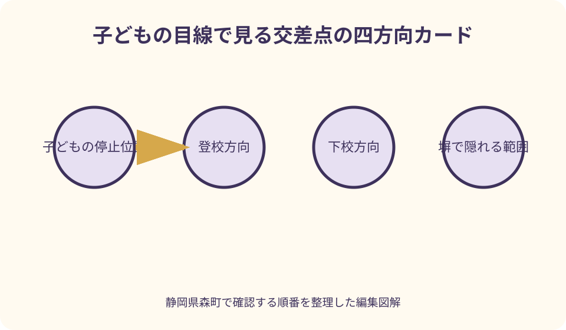
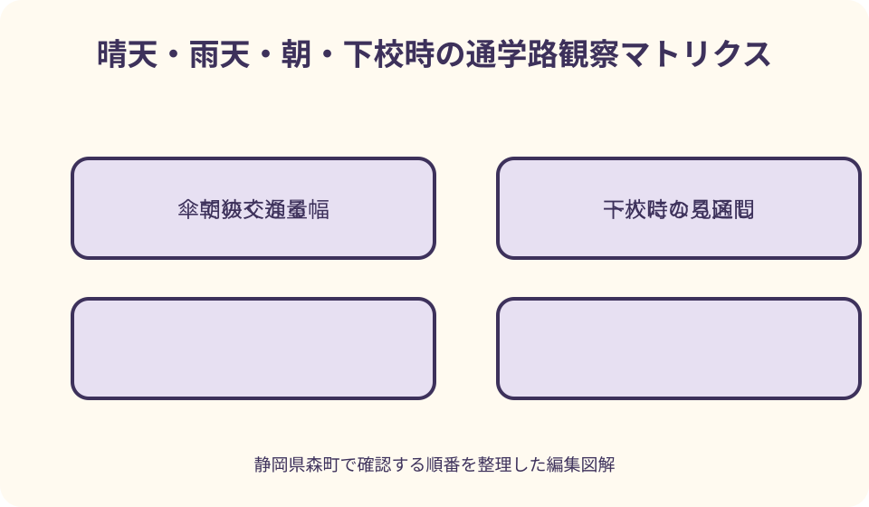

学校・就学・家庭記録｜最終確認 2026-08-10
静岡県森町の通学路を親子で歩く｜交差点・雨天・待合せの確認表
通学路の下見は、一度歩いて距離を測れば終わりではありません。朝の交通量、下校時の見通し、雨で狭くなる歩行空間、子どもが一人になる区間は時間と天候で変わります。森町が進める交通安全プログラムや学校の案内を確認したうえで、親子の観察を地点と時刻の記録に変え、気になる場所は学校へ相談するための手順をまとめます。

編集イラスト結論：一回の散歩ではなく条件を変えた観察にする
通学路を親子で歩く目的は、最短経路を探すことではなく、学校が示す経路を子どもの目線で理解することです。まず学校へ指定経路、登校班、集合場所、集合時刻を確認し、家庭判断で別の道へ置き換えないようにします。
下見は、朝の登校時刻、午後の下校時刻、可能なら雨の日の三回に分けます。同じ交差点でも、通勤車両、日差し、店や住宅の出入り、傘による視野の狭まりが変わるためです。
記録は「危ない」だけで終えず、住所や目印、進行方向、時刻、何が見えなかったかを書きます。写真を撮るなら通行人や住宅の内部をむやみに写さず、相談に必要な道路状況へ範囲を絞ります。
親子で歩いて問題が見つからなかったとしても、経路の安全を保証する結果にはなりません。工事、天候、交通量、見守り体制は変わるため、学校からの連絡と当日の状況を継続して確認します。
森町の交通安全プログラムを入口にする
森町は「子供の移動経路に関する交通安全プログラム」のページで、通学路の安全確保に向けた取組を継続的に実施してきたと案内しています。家庭の下見は、この公的な取組に代わるものではありません。
静岡県も、県内すべての市町が交通安全プログラムを策定し、学校関係者、道路管理者、警察などによる推進体制で合同点検と対策を進めていると説明しています。気づきを学校へ戻す意味はここにあります。
道路の課題には、区画線、側溝、標識、信号、植栽、私有地からの見通しなど複数の関係者が関わります。保護者が対策先を決めつけず、まず学校へ状況を伝え、適切な連絡経路を確認します。
掲載資料には作成時点があるため、過去の点検箇所が現在も同じ状態とは限りません。工事済み、再発、季節変化、新たな交通の流れを現地で見て、確認日を残します。
歩く前に学校へ確認する六項目
一つ目は指定された通学路、二つ目は登校班の有無、三つ目は集合場所、四つ目は集合時刻、五つ目は欠席や遅刻の連絡方法、六つ目は下校方法です。学年や地区で異なる可能性があるため、同じ町内の知人の例をそのまま使いません。
入学前なら、就学先が正式に決まっているかも確認します。森町公式には町立小中学校の名称と所在地が掲載されていますが、自宅から近い学校を地図だけで選び、通学路を設定するための一覧ではありません。
転居時は、住所変更後も同じ学校か、指定校が変わるかを学校教育課へ照会します。就学校が未確定のまま二つの候補路を比較すると、家族内で仮案が正式経路として伝わりやすくなります。
学校から紙の経路図が配られたら、年度、対象地区、凡例を確認します。古いきょうだいの資料は比較用にとどめ、集合場所や工事箇所の更新を新しい案内で確かめます。
持ち物は観察を邪魔しない範囲にする
下見には、学校の経路図、筆記具、時計、連絡手段、飲み物を用意します。子どもには可能なら普段に近い靴と荷物を持ってもらい、空身で歩いた時間だけを通学時間としないようにします。
雨天確認では傘、雨具、防水できる記録袋を使います。ただし雷、強風、大雨、河川増水など危険が予想される日に、記事の手順を優先して下見を行う必要はありません。日を変えます。
写真は、交差点の停止位置から見える範囲、路肩の幅、水がたまる位置を記録する補助です。歩きながら画面を見ず、安全に立ち止まれる場所で保護者が操作します。
蛍光ベストや反射材を試す場合も、着用すれば車から必ず見えるとは考えません。衣類や荷物の工夫と、道路の横断手順、学校の指導を組み合わせて扱います。
交差点では停止位置からの見え方を確かめる
交差点に着いたら、保護者が先に安全な場所を確認し、子どもが実際に止まる位置を決めます。白線や縁石の位置だけでなく、曲がる車、自転車、塀、植木、駐車車両で視界がどう変わるかを見ます。
大人には見える車が、子どもの身長では塀や車体に隠れることがあります。子どもの目の高さまで姿勢を下げ、左右それぞれで最初に見える地点を確認します。
信号がある場所では、青になれば直ちに進む練習ではなく、曲がってくる車と残っている車を確かめる動作を繰り返します。信号のない場所では、学校が示す横断位置と方法を優先します。
一回で「できた」と採点せず、子どもに「どこで止まる」「何が見えにくい」「車が来たらどうする」と説明してもらいます。答えに迷う地点は印を付け、学校へ相談する候補にします。
見通しは進行方向ごとに記録する
見通しの悪さは地点だけでなく、どちら向きに歩くかで変わります。登校方向では見えるが下校方向では建物の陰になる場合があるため、往路と復路を別の行に記録します。
カーブ、坂の頂上、橋の出入口、私道や駐車場から道路へ出る場所では、音だけに頼らず車や自転車が現れる位置を見ます。イヤホンや会話で周囲の音が聞こえにくくならない約束も確認します。
草木は季節によって伸び、日差しの向きも変わります。冬の下見で見通せても春夏に同じとは限らないため、入学後にも同じ場所を見直す月を家族の予定へ入れます。
私有地の植栽や駐車車両が関わる課題を、子どもや保護者が直接相手へ注意しに行くとは限りません。写真、位置、時刻を学校へ示し、相談先を確認します。

歩道がない道と狭い路肩を見る
歩道がない区間では、学校が教える歩き方と経路を先に確認します。道路交通の一般知識だけで子どもへ独自ルールを増やすと、集団登校の動きと食い違うことがあります。
路肩では、側溝のふた、段差、電柱、標識、ごみ集積所、停車車両によって歩ける幅が変わります。ランドセルと傘を使ったときに隣の子と並べるかも見ます。
すれ違う車を避けようとして側溝や民家側へ急に寄る場面を想定し、逃げ場のない区間を記録します。子どもへ無理な回避を求めず、その区間自体を学校への質問にします。
工事中の仮設通路は日ごとに変わる可能性があります。現場の案内、学校からの連絡、誘導員の指示を確認し、以前の下見結果だけで通行を判断しません。
朝と下校時で交通の流れを分けて見る
朝は通勤車両、店舗への搬入、送迎車が重なることがあります。休日の昼に歩いただけでは再現できないため、無理のない範囲で平日の登校予定時刻に合わせます。
下校時は学年や曜日で時刻が違い、見守りの人や他の児童の数も変わります。低学年の早い下校、行事日、短縮授業を一つの条件として学校へ聞きます。
西日で信号や車が見えにくい場所、建物の影で急に暗くなる場所は、季節と時刻を添えて記録します。明るい日に確認できても、冬の下校時間に同じ見え方とは限りません。
所要時間は大人が急いだ時間ではなく、子どもが交差点で止まり、坂を歩き、集合場所で待つ時間を含めます。二回以上測り、最短値だけを登校計画に使わないようにします。
雨天は傘で狭くなる幅と水の動きを見る
雨の日は傘で横幅が増え、顔の横の視界が狭くなります。軒や枝に傘が当たる場所、二人がすれ違いにくい場所、車の水はねを避けようとして進路が変わる場所を見ます。
側溝、低い路面、坂の下、橋の付近では、水たまりだけでなく水の流れを確認します。深さを試すために足を入れたり、増水した水路へ近づいたりはしません。
雨具を着ると車の音が聞こえにくく、フードで左右確認がしづらい場合があります。家庭の用品を実際に着け、子ども自身が首を動かして見られるかを安全な場所で試します。
大雨や警報時の登校判断は、通常の雨天練習とは別です。学校や森町からの連絡を確認し、保護者が下見で得た経験だけで登校可否を決める仕組みにしないでください。
一人になる区間と防犯の視点を加える
文部科学省の登下校防犯プランは、見守りの空白地帯となる一人区間などの危険箇所を把握し、関係者で共有する考え方を示しています。交通だけでなく、人の目が届きにくい区間も見ます。
静岡県警察は、子ども向け安全情報や、子どもと一緒に通学路を確認する資料を公開しています。家庭では怖さを強調するだけでなく、困ったときに助けを求める行動を具体的に練習します。
逃げ込める場所として、学校が案内する子ども一一〇番の家、営業中の店、公共施設などを確認します。表示や営業状況は変わり得るため、外観を見ただけで常時対応可能とは決めません。
不審な声かけを受けた場合の約束は、ついて行かない、距離を取る、大人へ知らせるなど、学校や警察の案内に沿います。緊急時は一一〇番を優先し、家庭の記録作りを先にしません。
待合せ場所は会えない場合まで決める
待合せは「校門」や「公園」といった広い名称ではなく、学校が認める範囲で、門のどちら側、建物の何付近まで具体化します。車や自転車の動線を妨げない場所かも確認します。
迎えの人が遅れたとき、子どもが勝手に別の場所へ移らない約束を作ります。学校へ戻る、指定した大人へ連絡するなど、年齢に合う方法を学校と相談します。
保護者の携帯電話がつながらない場合に備え、次の連絡先と順番を子どもが分かる形にします。電話番号を覚えることだけに頼らず、学校が扱える緊急連絡先を最新にします。
迎えを頼める大人の範囲、引渡し確認の方法は学校ごとに異なります。家族写真や合言葉を独自に使う前に、学校の引渡し手順と矛盾しないか確認します。
寄り道しない約束を具体的な選択にする
「寄り道しない」だけでは、落とし物をした、トイレへ行きたい、友人が転んだという場面で迷います。止まる必要が生じたときに誰へ伝え、どこで助けを求めるかを場面別に話します。
友人から別の道へ誘われたときは、学校が示す経路から離れず、帰宅後に遊ぶ約束は保護者へ確認するなど、短い言葉で断る練習をします。相手の子を悪者として教えないことも大切です。
忘れ物に気づいて一人で学校へ戻る、落とした物を車道へ取りに出るといった行動は避ける約束を作ります。物より本人の行動を優先し、帰宅後に大人へ伝えます。
体調が悪くなった場合の助けの求め方も確認します。知らない家へ片端から入るのではなく、学校が案内する場所や周囲の大人へ具体的に声をかける練習をします。
子どもに道順を説明してもらう
保護者が先頭を歩くだけでは、子どもが景色を手掛かりにできるか分かりません。安全な区間で「次はどこで曲がる」「どこで止まる」と問い、子どもの言葉で説明してもらいます。
左右の呼び方だけでなく、橋、店、標識、色の違う建物など変わりにくい目印を選びます。停車車両、看板、季節の花のように移動・消失する物だけを目印にしません。
間違えたときに叱って正解を覚えさせるより、「分からなくなったら先へ進まない」という行動を練習します。学校、家族、指定した助け先へ連絡する順を確認します。
弟妹と一緒でも、上の子に全面的な責任を負わせません。年齢や発達段階でできる確認は違うため、同行する大人や学校の見守りと組み合わせます。
学校へ相談する記録は地点・時刻・現象で作る
相談票の一行目には、地点を住所、交差点名、電柱番号、目立つ建物などで示します。地図へ印を付け、登校方向か下校方向かを矢印で書くと、同じ場所を共有しやすくなります。
二行目には確認日時と天候、三行目には「左から来る車が塀で見えない」「雨天時に歩ける幅が傘一つ分になる」のように観察した現象を書きます。対策案は別欄にします。
四行目には子どもが何に迷ったか、五行目には写真番号を置きます。個人の顔、車両番号、表札が写った画像を不特定多数へ公開せず、学校が求める方法で共有します。
最後に、学校からの回答日、次の確認先、家庭で当面行うことを書きます。相談した事実だけで道路が直ちに変わるとは限らないため、回答待ちの間の登下校方法も確認します。
危険を感じたときの相談先を混同しない
日常的な通学路の課題は、まず学校へ伝え、教育委員会や道路管理者、警察などとの連携先を確認します。静岡県の条例も、道路管理者、保護者、学校、地域住民、警察署長の連携を掲げています。
事故が起きた、犯罪被害が差し迫っているという緊急時は、通常の相談票作成を優先しません。一一〇番や一一九番など状況に応じた通報を行い、子どもを安全な場所へ移します。
道路設備の改善を希望する場合も、家庭だけで標識や物を設置しません。道路の管理区分や交通規制に関わるため、学校を通じた相談や行政の案内に従います。
学校へ伝えてもすぐに返答がないときは、相談日、担当、内容を確認し、次回連絡日を決めます。感情を抑える必要はありませんが、地点と現象を分けると関係者が現場を再確認しやすくなります。

親子で歩く良い点
良い点は、大人の地図読みと子どもの見え方の差を、その場で見つけられることです。低い目線では車や塀で視界が切れ、ランドセルや傘が動きを制限することを具体的に理解できます。
所要時間を実測すると、集合時刻から逆算した起床や出発の予定を現実に合わせられます。最短時間ではなく、横断待ちと子どもの歩調を含む時間を家族で共有できます。
待合せや困った場面の約束を、家の中の会話だけでなく実際の場所と結び付けられます。「ここで会えなければどうする」と問い、選択肢を親子で確認できます。
学校への相談も、「何となく不安」から地点、時刻、現象を示す内容へ変わります。家庭の感覚を切り捨てず、他の関係者が現場を確かめられる記録にできる点が有用です。
通学案内へ注文したい点
注文したい点は、通学路の全地点について、時間帯、雨天、工事、季節変化まで一つの公式資料に載せるのは難しいことです。家庭は学校の案内を起点に、現在の状況を補う必要があります。
地図上の線だけでは、どちら側を歩くか、どこで横断するか、集合場所の細部が分かりにくい場合があります。曖昧な地点を独自解釈せず、学校へ地図を示して確認します。
合同点検や対策箇所の情報があっても、掲載されていない場所が問題なしと保証されたわけではありません。また掲載場所が必ず危険で通れないという意味でもありません。現在の現場と公的案内を併せて見ます。
学校、道路管理者、警察など関係者が多いため、保護者には最初の窓口が見えづらいことがあります。学校へ伝えた後、誰が確認し、家庭へどう回答されるかまで案内されると実行しやすくなります。
代案・結論：悪天候や体調不良なら日を改める
雨天の様子を見たいからといって、大雨、雷、強風の日に子どもを連れ出す必要はありません。通常の雨の日へ延期し、危険な天候の対応は学校や町からの連絡で確認します。
保護者が登校時間に同行できない場合は、家族内の別の大人と同じ観察表を共有し、後日親子でも短い区間を歩きます。人から聞いた所要時間だけで子どもの理解を確認したことにはしません。
経路全体を一度に歩くのが難しい場合は、学校付近、主要交差点、自宅付近に分けます。分割した区間の間をどうつなぐかは地図上だけで済ませず、別日に確認します。
結論として、下見の価値は無事故を約束することではなく、子どもが止まる場所、助けを求める場所、家族と学校が見直す場所を共通の言葉にできることです。
大石の視点：内見は玄関から学校まで続いている
住まいを選ぶとき、物件資料の「学校まで何分」は経路の状況を伝えきれません。私は、子育て世帯の内見は玄関で終わらず、候補の通学経路を実際の時間帯に歩くところまで含めたいと考えます。
同じ距離でも、横断回数、坂、狭い路肩、朝の車の流れで負担は変わります。学校の評判を比べるのではなく、子どもの歩調と家族の送迎余力を具体的に測る方が暮らしの判断に役立ちます。
ただし不動産会社が示す徒歩経路は、学校が指定する通学路とは限りません。契約判断に学校経路が重要なら、住所と就学校を教育委員会へ確認し、通学方法は学校へ尋ねます。
用水路、擁壁、空き家、工事予定地など物件周辺の変化も、通学時の見え方に影響します。所有者へ直接対応を迫る前に、管理区分と相談先を確認し、家庭の観察と専門判断を分けます。
記事固有の親子通学路チェックシート
一枚目の上段には、学校名、学年、経路図の年度、登校班、集合場所、集合時刻を書きます。学校確認済みの情報と、家庭の仮案を色で分け、仮案を正式な指示と取り違えないようにします。
中央には、地点番号、住所や目印、進行方向、朝の見え方、下校時の見え方、雨天の変化、子どもの言葉を記入します。一つの地点に複数の現象があれば行を分けます。
下段には、待合せ場所、会えない場合、連絡できない場合、助けを求める場所、緊急時の行動を書きます。子どもに読み上げてもらい、意味が分からない言葉を大人向けのまま残しません。
右端には、学校相談日、共有した資料、回答、当面の行動、再確認日を置きます。改善済みと聞いた箇所も、次の下見で現場を確かめるまで記録を閉じません。
入学後も季節と生活の変化で見直す
初回の見直しは、実際の登校を始めた一週間後が目安です。荷物を持つと遅くなる場所、友人と合流して歩き方が変わる場所、子どもが説明と違うと感じた点を聞きます。
梅雨前には雨具と水の流れ、夏前には暑さと日陰、秋冬には日没時刻と西日の見え方を確かめます。季節ごとの確認を一度に済ませたことにしません。
道路工事、新築、店舗の開閉、バス停や登校班の変更があれば、該当区間を再び歩きます。学校から新しい案内が来たら、古い地図に上書きせず更新日を付けて保管します。
子どもの成長、けが、体調、支援の必要性でも歩き方は変わります。以前できたことを当然とせず、本人の言葉と学校の助言を踏まえて通学方法を見直します。
学校へ送る相談文の例
「指定通学路の○○交差点を、四月十日午前七時四十分に登校方向へ歩きました。塀で右側から来る車が子どもの目線では見えにくい状態でした」と、最初に地点、日時、方向、現象を伝えます。
続けて「地図の地点一と、停止位置から撮った写真一枚があります。家庭で当面注意する点と、学校が指定する横断方法を教えてください」と、求める回答を明確にします。
雨天なら「傘を差すと路肩で二人がすれ違いにくく、車を避けて側溝側へ寄る様子がありました」と観察を書きます。「絶対に危険」と結論だけを送るより、再確認可能な情報になります。
緊急性があると感じる場合は、その旨を最初に伝え、通常のメール回答を待つべきか尋ねます。事故や差し迫った危険は、状況に応じて警察・消防への連絡を優先します。
まとめ：止まる・見る・戻すを家族の習慣にする
静岡県森町で通学路を下見するときは、学校の指定を確認し、朝、下校時、通常の雨天で条件を変えて歩きます。交差点、見通し、路肩、一人区間、待合せを別々に観察します。
子どもには正解を暗記させるだけでなく、分からないときに止まり、勝手に別の道へ進まず、大人へ知らせる行動を練習してもらいます。年齢に合わない責任を負わせません。
気になる地点は、場所、時刻、天候、進行方向、起きた現象を記録して学校へ戻します。家庭だけで道路の管理者や対策を決めず、公的な連携の入口につなげます。
最初の一歩は、学校の経路図と時計を持ち、平日の登校予定時刻に親子で歩く日を決めることです。歩いた後は、三つの気づきと一つの待合せ約束を一枚に残してください。
公式情報・確認先
掲載内容は次の一次情報を基礎に整理しました。営業、料金、催し、交通は変わるため、出発前または手続き前にリンク先で最新情報を確認してください。
- 子供の移動経路に関する交通安全プログラムの策定について（静岡県森町、2026-08-10確認）
- 森町の小・中学校一覧（静岡県森町、2026-08-10確認）
- 学校教育課（静岡県森町、2026-08-10確認）
- 通学路等の交通安全対策（静岡県、2026-08-10確認）
- 子供・女性安全情報（静岡県警察、2026-08-10確認）
- 子供の安全情報（静岡県警察、2026-08-10確認）
- 静岡県防犯まちづくり条例 学校等における児童等の安全確保（静岡県警察、2026-08-10確認）
- 学校等における児童等の安全の確保に関する指針（静岡県警察、2026-08-10確認）
- 登下校防犯プラン（文部科学省、2026-08-10確認）
- 通学路における合同点検結果を踏まえた交通安全の確保の徹底について（文部科学省、2026-08-10確認）